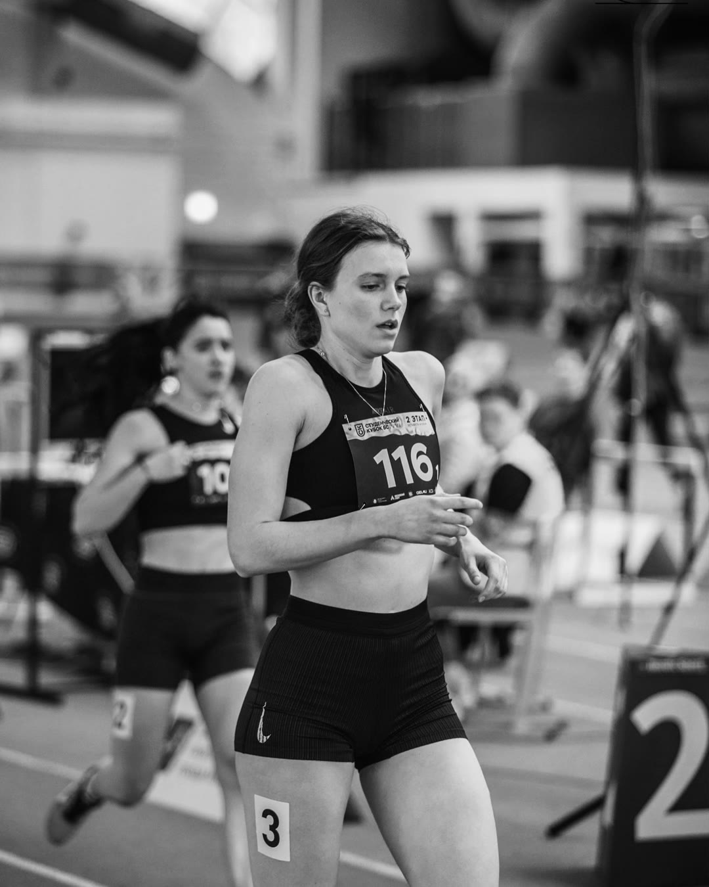
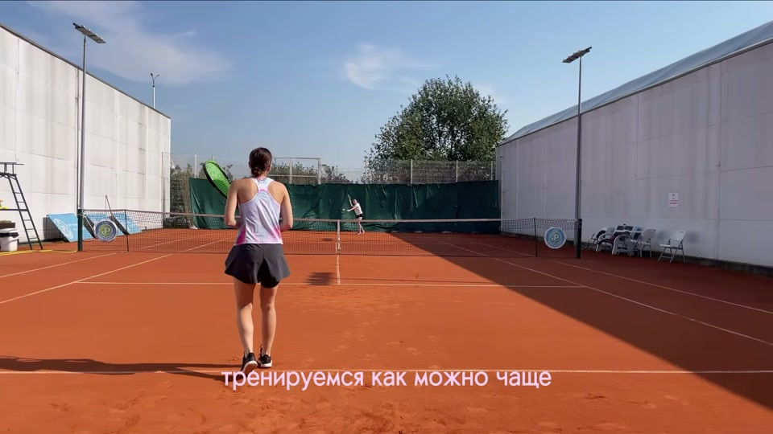
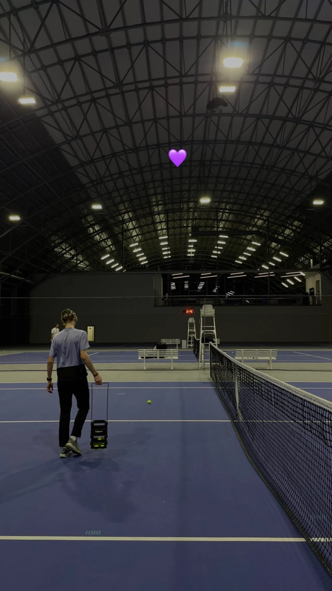
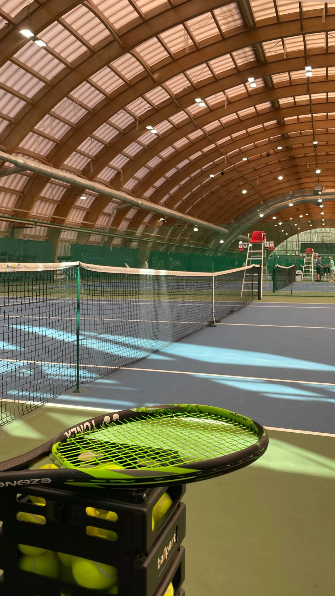
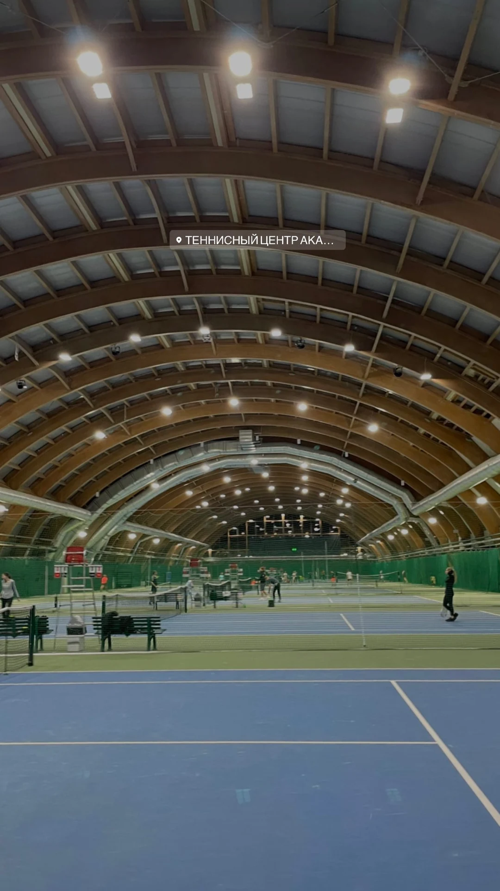
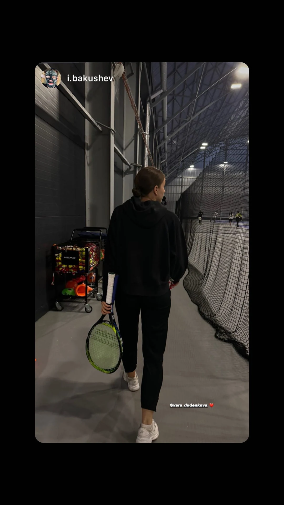
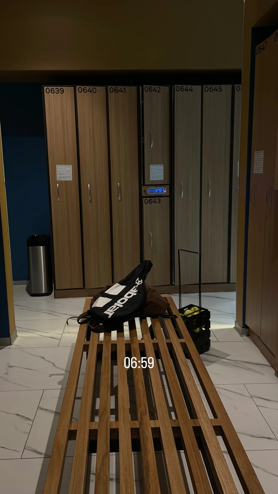
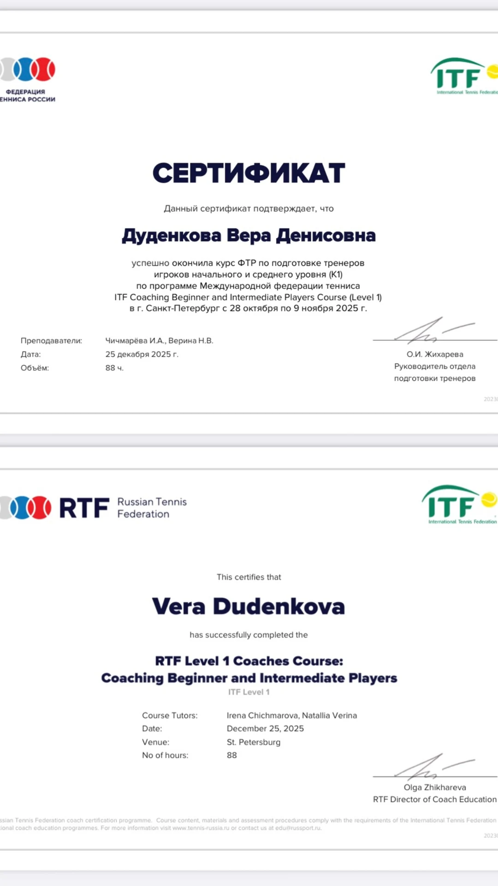
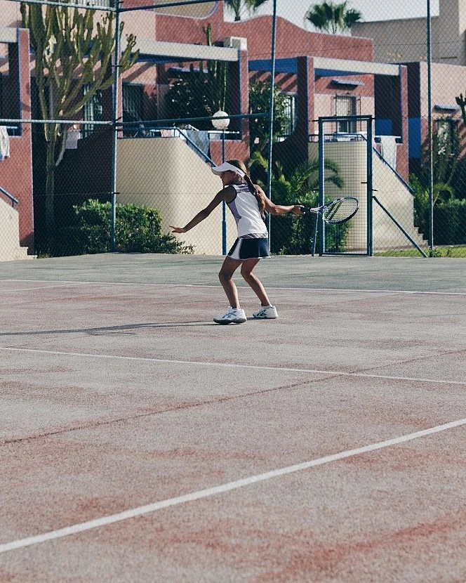
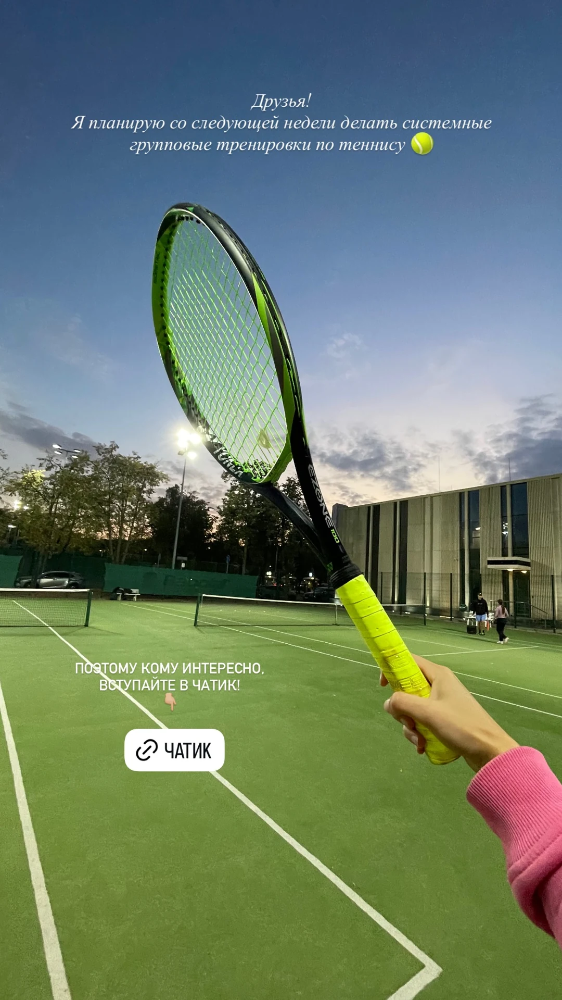

Немного обо мне
Из спринта
в теннис.
12 лет моей жизни были связаны с лёгкой атлетикой. Раньше я бегала спринт. Сегодня играю в теннис и приглашаю вас на тренировки.

Большой теннис · Москва
Увидимся на корте?
Я тренер по большому теннису.
Очные тренировки в Москве.
Мои подачи, розыгрыши и маленькие моменты между тренировками.

Игра по диагонали, подача и розыгрыши на счёт.
 0:10
0:10

 0:03
0:03



 0:15
0:15 0:09
0:09 0:22
0:22 0:05
0:05 0:12
0:12 0:08
0:08 0:32
0:32

Немного обо мне
12 лет моей жизни были связаны с лёгкой атлетикой. Раньше я бегала спринт. Сегодня играю в теннис и приглашаю вас на тренировки.

Очные тренировки в Москве
Договоримся о месте и времени тренировки.